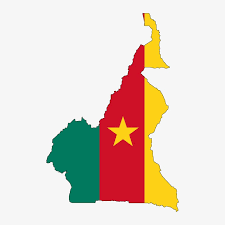

Le Cameroun est un pays d’Afrique centrale riche en cultures, langues et paysages. Il possède plus de 250 ethnies et une diversité unique en Afrique.Le Cameroun est situé au fond du golfe de Guinée, à la jonction de l’Afrique de l’Ouest et de l’Afrique centrale, avec une superficie de 475 440 km² et une population d'environ 29 millions d’habitants. Il possède près de 590 km de côtes le long de l’Océan Atlantique et partage des frontières terrestres avec le Nigeria, le Tchad, la République centrafricaine, le Congo, le Gabon et la Guinée équatoriale. Le relief est très varié, comprenant des plateaux, des hautes terres (monts Mandara, plateau de l’Adamaoua, hautes terres de l’Ouest), des plaines côtières et des montagnes à l’ouest. Le pays présente une grande diversité climatique, allant des climats équatorial et subéquatorial au sud aux climats tropicaux plus secs au nord.
Le Cameroun compte environ 250 groupes ethniques répartis en trois grands ensembles : Bantous, Semi-Bantous et Soudanais. Les principales ethnies incluent les Béti, Bassa, Bakundu, Bamiléké, Bamoun, Peuls et Mafa. Le pays est multilingue, avec le français et l’anglais comme langues officielles, et près de 200 dialectes africains. La population pratique majoritairement le christianisme et l’islam, avec également des pratiques animistes.
Avant la colonisation, le territoire était composé de royaumes et de sociétés variées. Le Cameroun fut colonisé par l’Allemagne au XIXe siècle, puis divisé après la Première Guerre mondiale entre la France et le Royaume-Uni sous mandat international. La partie française accéda à l’indépendance le 1er janvier 1960, suivie par le rattachement du Cameroun méridional britannique le 1er octobre 1961, formant la République fédérale du Cameroun, devenue République unie en 1972 et République du Cameroun en 1984. Depuis 1982, Paul Biya est président du pays. Le Cameroun était composé de royaumes puissants comme Bamoun, Duala et Tikar.
En 1884, les Allemands colonisent le Cameroun. Ensuite il est partagé entre la France et l’Angleterre.La colonisation du Cameroun a été marquée par des relations complexes entre les puissances coloniales et les populations locales. Les Européens, notamment les Allemands et les Britanniques, ont cherché à développer leur commerce et à mettre fin à l'esclavage dans la région. Cependant, leurs efforts ont été souvent contestés par les chefs locaux, comme le montre la révolte des Doualas en 1891. La Première Guerre mondiale a également eu un impact significatif, entraînant la division du Cameroun entre la France et la Grande-Bretagne après la défaite allemande. Cette période a été marquée par l'administration conjointe du territoire par les deux puissances, suivie par un mandat de la Société des Nations. La colonisation a laissé des traces durables sur l'économie, la société et la culture camerounaises, et a été marquée par des luttes pour l'indépendance et des politiques coloniales controversées
Le Cameroun devient indépendant en 1960 sous Ahmadou Ahidjo.
Le Cameroun est une république unitaire avec une économie mixte, agricole et manufacturière. Ses principales ressources proviennent du pétrole, du cacao et des investissements dans les infrastructures. Le pays a un IDH de 0,588, correspondant à un développement humain intermédiaire inférieur, et un taux d’alphabétisation de 67,9 %.
Les principales villes incluent Yaoundé, la capitale politique, et Douala, la capitale économique. D’autres centres urbains importants sont Garoua, Bafoussam, Maroua et Bamenda. Présidence de la République du Cameroun Le Cameroun se distingue par sa diversité géographique, culturelle et linguistique, ce qui en fait un pays unique sur le continent africain, souvent qualifié de « miniature Afrique » en raison de la variété de ses paysages et de ses peuples.
Année d’indépendance ?
Premier président ?